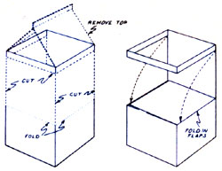

Jim and Shawn Pannell of Chico, California have discovered a way to recycle half-gallon waxed-paper milk cartons into simple, stackable freezer containers. After rinsing each carton, the Pannells cut the spout section off (using a knife or pair of scissors) and then make a horizontal cut 1/2 inch down from the top and around three sides of the container. (Be sure not to cut the strip off, however.) The next cut is made vertically-beginning under the 1/2-inch band-from each of the four corners: Cut halfway down the remaining length of the box. Now all you do is fold down the flaps created by that last cut, and slip the strip over the bottom to hold the box closed. The result is a handy little freezer carton that won't cost you a cent!
Of course, once the freezer is filled to the brim, there's nothing left to do but make jams and jellies with the fruits and berries from your orchard or bramble patch. And those of you who have difficulty obtaining the paraffin needed to cover your precious preserves can try this idea from Charlotte Brown. After the jelly is poured into the glass containers and cooled, Charlotte beats some egg whites until they're frothy . . . then cuts out circles-one inch larger in diameter than the jars-from white tissue paper. The resident of Atwater, Ohio dips each circle carefully in the egg white mixture, places it over the top of the jar, and presses firmly (being careful not to tear the paper). She lets the sealers dry ... then stores the jars in the refrigerator or a cool, dry cupboard. (The jelly shouldn't be frozen, of course.) Mrs. Brown reports that she's used her unusual sealing method for eight years and hasn't yet experienced any spoilage or "bubbling out" (which does sometimes occur with wax).
For those of you who still prefer the paraffin method of covering jellies . . . here's a trick that may save you from a lot of the mess and bother that comes from working with hot wax. When Barbara Day makes jelly, she shaves slivers of hard paraffin into the bottom of her jars, then pours the hot jelly over that. The McLoud, Oklahoman says the waxy substance will melt, rise to the top, and seal the jelly! Barbara does warn, however, that-after the jelly has completely cooled-the paraffin will sometimes shrink and pull away from the jar, so she recommends that you pour another thin layer of the melted sub stance around the edges . . . to insure a secure closure.
After the work's done for the day, it's hard to beat a fine July evening for relaxing by the creek or pond and getting in some fishing. And Mike McCain knows how to make live bait a bit more appetizing to the lunkers you hope to snare for your supper table. McCain-who hails from Ocean Springs, Mississippi-suggests clipping off a little bit of the upper point of the minnow's tail fin. That way, the small fish will have to swim taster to maintain equilibrium . . . and its erratic movements will be more likely to attract a hungry predator for your family fishfry.
"I've been building toys for several years now and-rather than paint them-I prefer to use wood in natural, contrasting colors . . . such as pine for a car body and walnut for its wheels," writes Ronald W. Wheeler of Timmins, Ontario. "But it used to be difficult to locate a real variety of materials . . . since the so-called 'exotic' woods were either unavailable or prohibitively expensive." Well, to make along letter short, the Canadian has discovered that foreign manufacturers often ship large products (such as machinery) in crates or pallets made from their local native trees. For instance, Japanese photocopiers are sometimes shipped on pallets constructed from mahogany and orangewood. By asking around local office or industrial supply outlets-or even stereo shops-you can often find such scrap wood free for the taking . . . and then transform it into something truly beautiful!
When Jan Weeks finds a sewing pattern that fits well and that she likes a lot, she turns the fragile tissue pieces into long-lasting, flexible ones by backing them with lightweight iron-on interfacing. The Mack, Colorado resident writes that her method sure beats going to the trouble of tracing patterns onto wrapping paper . . . and also alleviates the tedious task of copying all the markings and instructions from the original pattern onto the sturdier "master".
A Mount Vernon, Georgia man has a good tip for any folks who are tired of buying expensive outdoor grills that often burn out their bottoms in one season. Wayne Trautz made a flowerpot grill from an unglazed clay container that was 11 inches deep and 11 inches across. He filled the potto about five inches from the top-with dirt (gravel or sand would work, too).
When he's ready to cook, Wayne places foil over the earth and adds charcoal . . . being careful not to let hot coals touch the sides of the pot, because the heat might crack the clay. Finally, he places a rack over the top (a cake cooler or a leftover grating from one of those burned-out barbecues, but not a refrigerator or other galvanized rack, since that would produce toxic fumes when heated) . . . and he's all set to cook up a summer picnic!
After your grilled steak or soyburger has sizzled to perfection, you can use Donald and Cindy McBride's technique to recycle any unconsumed coals from the fire. Begin by constructing a 2-1/2-foot square frame with any available boards you may have lying around, then staple wire mesh across the top. (The screen can be recycled from a window or else purchased new at the hardware store.) Thenthe Richmond, Virginians suggest-when you're finished cooking, dump the hot coals on the screen and spray them with water from your garden hose. Once dried, the charcoal will be ready to use when preparing another outdoor dinner.
Barbara McKinney took the guesswork out of trimming her goats' hooves when she happened upon a useful little tool at her local hardware store. The woman from Portland, Oregon reports that the instrument-called a "Stanley Surform Pocket Planer"-will gently "file" the hoof down only where it's needed. The cutter is composed of a series of rasplike holes rather than a single straightedged blade.
A Rochester, New York reader has written in with still another "useful tool" suggestion. Daniel DeVault claims that no toolbox should be without a package of chewing gum. Dan finds the sticky substance very useful for removing broken keys from locks, patching leaking carburetors, or retrieving dropped screws and nuts from hard-to-reach crevices ... and reports that it can also come in handy when you discover you've left your magnetic screwdriver at home!
"When my youngest child grew out of his crib, I decided I wanted to keep the bed (perhaps to pass on to grandchildren in the far-off future) ... but I couldn't figure out where to store the sleeper," writes Cheryl Tavares of Newfield, New York. "I finally came up with the idea of turning the crib on end ... shoving it back in a closet . . . and sliding pieces of wide plywood over the slats, to make a useful shelving unit for toys, clothes, shoes, and any other household items."
And, while Mrs. Tavares was looking for ways to make the crib earn its keep between babies, she came up with still another idea worth passing on. Cheryl decided she'd brighten up the white walls of her children's room by drawing a colorful alphabet, right on the existing paint, with marking pens. Beside each letter, she drew a simple illustrative picture . . . an apple for A, a ball for B, etc. Not only does her artwork add to the room's decor at a fraction of the cost of wallpaper, but the children begin to become familiar with the alphabet very early.
Finally, we want to mention a few tips that apply to the less pleasant side of summer. It's very likely that by the time you read this, many parts of the country will be drought-stricken . . . possibly even to the point where wateruse restrictions are imposed. The following advice from MOTHER-reader R.W. Myers may make your efforts to conserve the precious liquid more successful:
"For several years our city has had severe water shortages," R.W. writes, "so my idle garden hose has assumed a new duty. I attached it to our hot water tank . . . and hung it so that it will be ready to do emergency duty in the event of a fire." Mr. Myers also suggests using the same hose to drain the sediment from the water tank on a regular basis.
And last-the resident of Gloucester, Massachusetts writes-"Water restrictions in many areas will forbid the use of hoses to wash cars. I've found that the following trick works well in keeping an automobile clean and shiny. Add about a cup of kerosene (or home heating oil) to a bucket of warm water. Starting on the interior, wipe all windows and plastic surfaces with a soft rag that has been wrung out in this 'magic mess'. Immediately wipe it dry with another clean cloth. Next move to the exterior of the car and work down from the roof . . . wiping and drying a small section at a time. The results will amaze you! Water beads up on the finish, and it'll resist dirt for quite a long time. I've cleaned my car this way for 30 years, and it's always worked great! Just remember to wipe the liquid off right away . . . and never let an area air-dry."
OK. Now it's YOUR turn! We've all come up with some practical, down-home, time-tested solutions to the frustrating little problems that bug us every day. Let's hear YOUR best "horse sense" ideas so we can share'em and all benefit.
Send your pointers to Down-Home Country Lore, P.O. Box 70, Hendersonville, North Carolina 28791, and I'll make sure that the most useful of the suggestions will appear in upcoming editions. A one-year subscription-or a oneyear extension of an existing subscription-will then be sent to each contributor whose tip does get printed in this column.-MOTHER.
|
 |
|
|